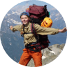

Актуальные направления
Кемпинг в Хардангере – сердце Региона фьордов
Одно из лучших мест отдыха находится в районе Хардангера, у туристов есть возможность ежедневно любоваться дикой природой севера.
Подробнее
Треккинг по Согне-фьорд с восхождением на Гальхёпигген
Уникальный поход совмещенный с путешествием по самому большому и красивому фьорду – Согне-фьорд.
Подробнее
Восхождение на гору Ушба в регионе Сванети
Одна из самых знаменитых гор Кавказа. Расположена она в регионе Сванети. Со сванского языка "уш" означает беда, "ба" — гору. То есть гора, приносящая несчастье.
Подробнее
Каякинг на каноэ по озеру Сайма в Финляндии
Водный поход с элементами ориентирования и необычными природными объектами. Неделя настоящего отдыха для тех, кто любит ...
Подробнее
Треккинг к Языку Тролля — Фьорд Sørfjorden, Норвегия
Язык Тролля - без преувеличения самое известное и культовое место в Норвегии. К нему не доехать на машине. Сюда могут попасть только те..
Подробнее
Поход по Исландии - Лаугавегур - Ландманалуга
За 9 ходовых дней (из них 2 дня – радиальные выходы) пройдем ~ 135 км по горам, лавовым полям, разноцветным холмам и другим исландским природным..
Подробнее
9
Лет работы
62,500
Довольных клиентов
112
Захватываюших туров
23
Офиса в Беларуси
Наш блог
10 мест на Земле, которые обязательно должен посетить каждый
20 октября 2018
Как стать успешным тревел-блогером
Блоги о путешествиях - это актуальное пространство, и каждый день оно становится более переполненным. И многие советы, которые..
17 октября 2018
21

Лайфхаки успешно- го путешествия по Норвегии
Норвегия — пожалуй, лучшая страна для приключенчес- кого туризма в Европе. Здесь есть все: горы для альпинистов..
12 октября 2018

112

13
Отзывы наших клиентов
Спасибо, что даете почувствовать себя сводобными! Ходили дважды, и каждый раз заряжались энергией на год вперед. Отдельное спасибо гиду Михаилу!
София
208